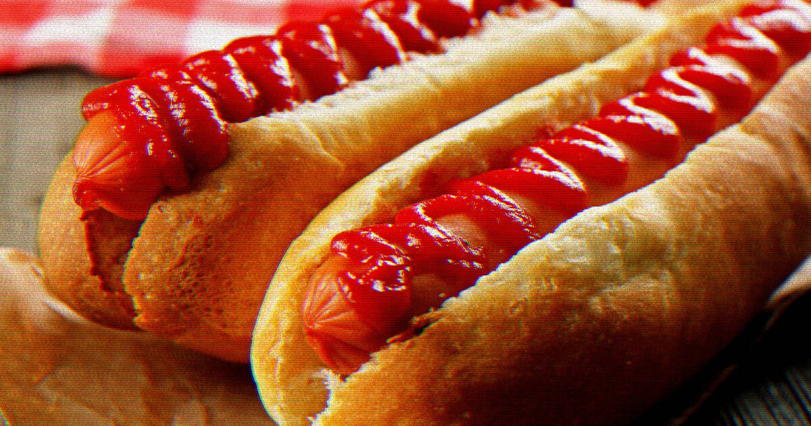

Vozár Bence weboldala
Hot-Dog
Története
A hot dog virsliből és úgynevezett hot dog kifliből álló, melegen felszolgált étel. A főtt virslit puha, félbevágott vagy lyukasztott hot dog kiflibe helyezik és általában mustárt tesznek
a tetejére. Mustár helyett sokféle szószt (majonéz, ketchup, csiliszósz) vagy felvágott zöldségeket, savanyúságot is tehetnek a virsli mellé a kiflibe.
Alapanyag:virsli,kifli,öntet
Nemzet,ország: Amerika
A hot dog eredete vitatott, többféle elmélet is létezik a származását tekintve. A legnépszerűbb elméletek szerint az Amerikában a bécsi wienerwurst és a frankfurti frankfurter sausage[1] „dachshund” (kis kutya) néven kezdték el árusítani valószínűleg német bevándorlók, mivel a különféle virsli- és kolbászfajták leginkább a német konyhára jellemzőek. 1867-ben egy német hentes, Charles Feltman megnyitotta New York első hotdog-standját.[2]
A hot dog név legkorábbi említése 1893-ból származik, a Knoxville Journal egyik cikke említi ezen a néven.
Népszerű ízesítései.
Mustáros
Ketchupos

Kada weboldala